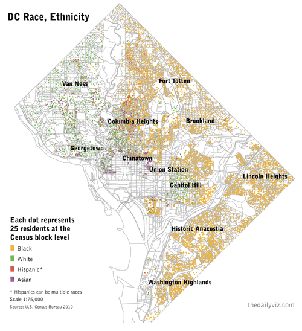

Published on , by Matt Stiles, November 27th 2011, 4:15:00 pm

I’ve been obsessed with William Rankin’s ‘radical cartography’ site for more than a year. One map in particular — a detailed view of Washington, D.C.’s segregated neighborhoods — has stuck with me more than others over time.
The map used 2000 Census data to show how black residents are clustered in northeast and southeast neighborhoods, while white residents live in the northwest. He also mapped poverty, income, crime and education — creating a stunning series of images about inequality in the city.
I don’t have Rankin’s cartography skills, but I’ve tried my best to update his race map, using similar colors and features, with the 2010 Census data. First, this map shows concentrations of black residents, who made up roughly half the city’s population in 2010, down 10 percentage points from the previous decade:
This map shows where Hispanic residents are clustered:
Here’s another version with all major race/ethnicity groups. The dots represent 25 residents per U.S. Census block:
All the data used to make the maps can be download here.